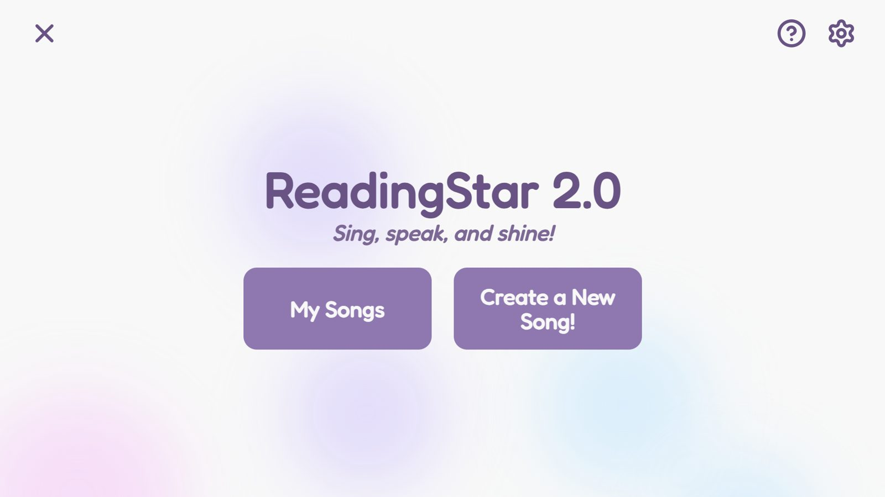
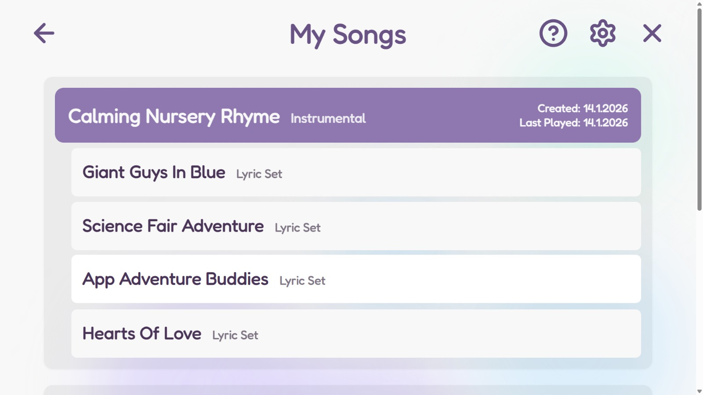

ReadingStar 2.0
Helping children find their voice.
- Partners
- IBM, Intel & the National Autistic Society
- My role
- Music generation, audio utilities & scoring
- Stack
- Electron, IBM Granite, Meta MusicGen
- Status
- Packaging for release
Overview
ReadingStar 2.0 is a closed-source project developed at UCL in collaboration with IBM, Intel and the National Autistic Society. It supports children with autism in developing their communication skills by encouraging them to sing along to AI-generated songs based on their interests and preferences, a fun and engaging way to practise vocalisation and speech.
Everything runs locally on the user’s device. That keeps the children’s data private and secure, and it means the app works offline on old and low-spec machines, making it accessible to a much wider audience.

The Solution
We used IBM’s Granite model to generate lyrics and Meta’s MusicGen to create the music, and packaged everything into a clean, child-friendly Electron application. The challenges included optimising the AI models to run well on low-spec devices, beat matching, and scoring the user’s singing, all while keeping the app accessible and enjoyable for children with autism. Our collaboration with the National Autistic Society was crucial here: their insight and feedback made sure the app truly meets the needs of its users.
I was responsible for the music generation, the audio-utility functions and the scoring system. Rory Byrne built the frontend and plugged all our subsystems together. Doruk Ersoy worked on lyric generation and the structure of the backend. Sinan Sensurucu designed the beat-matching algorithm that keeps the generated music and lyrics in sync and, as team leader, also handled the business side of the project.

Additional Details
- Biggest milestone: presenting the project at the Bett conference on 22 January 2026.
- Currently working on: packaging the app for release.
- Thanks to: our collaborators above, Professor Dean Mohamedally, and our TAs Ashley Tam and Yusuf Afifi.